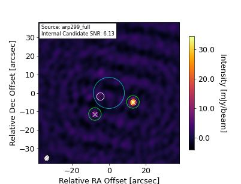

Source Information for 250206_07:06:38 (ObsID 00000)
|
0 |
| polaris_folder |
. |
| target_dir |
/sma/data/science/mir_data/250206_07:06:38 |
| sciTargs |
Arp299 |
| gainCals |
1048+717, 1146+399 |
| fluxCals |
Uranus, Callisto |
| bpCals |
3c84 |
| polCals |
|
| selfCals |
|
| otherCals |
|
| deadList |
|
| projectTitle |
Unknown |
| projectID |
UNK |
| piName |
N/A |
| linkObsID |
|




|
field_name |
obs_date_time |
file_name |
beam_maj_axis |
beam_min_axis |
beam_pos_angle |
flux_uncertainty |
flux_density |
coord_ra |
coord_dec |
internal |
| source_1 |
arp299 |
6-13-25 13:26:12 |
arp299_full.fits |
5.095 arcsec |
2.762 arcsec |
9.0 deg |
1.945 mJy |
11.131 mJy |
172.13 deg |
58.564 deg |
True |
| source_2 |
arp299 |
6-13-25 13:26:12 |
arp299_full.fits |
5.095 arcsec |
2.762 arcsec |
9.0 deg |
1.945 mJy |
37.219 mJy |
172.14 deg |
58.563 deg |
False |
| source_3 |
arp299 |
6-13-25 13:26:12 |
arp299_full.fits |
5.095 arcsec |
2.762 arcsec |
9.0 deg |
1.945 mJy |
12.118 mJy |
172.129 deg |
58.561 deg |
False |